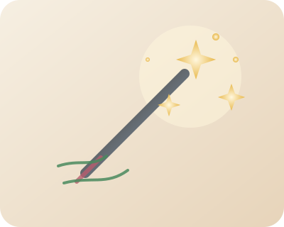
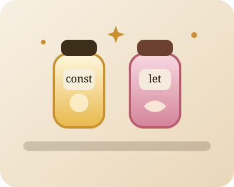
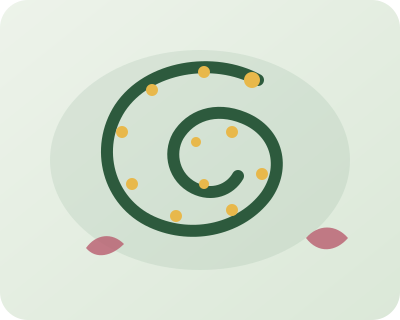
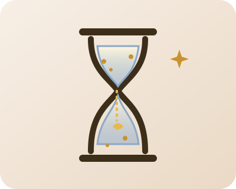

Lost in the Scroll
A Fairytale of JavaScript
Once upon a time, in a kingdom woven from logic and light, a young apprentice set out to learn the ancient tongue of JavaScript. This is that story — told in enchantments, spells, and scrolls.
The Oracle's Mirror
Before any great spell could be cast, the apprentice learned the first and most vital rule of the enchanted palace: always watch the mirror. Tucked behind the kingdom's surface lay the Oracle's Mirror — the browser's DevTools — a hidden pane of glass through which all truths could be seen.
This chapter represents one of the first coding tools I learned in class: using console.log() and browser DevTools to check what my code was doing, inspect values, and catch mistakes while building.
To speak with the mirror, she used an incantation so simple it seemed almost too humble for magic: console.log(). Whatever she whispered, the mirror repeated back — faithful and precise.
“Open it with F12,” said the wizard, “and let it become your most trusted companion. When a spell returns the wrong answer, look to the mirror first.”

console.log
The everyday incantation. Prints values into the mirror so I can inspect what my code is doing.
console.warn
A warning spell that hints something may be off before it becomes a full break.
console.error
The alarm bell. When the enchantment fails, the mirror tells me where to look first.
The Enchanted Jars

Deep in the apothecary of the enchanted palace, the apprentice discovered two remarkable jars upon a dusty shelf. Each was sealed differently — one with wax so hard no flame could melt it, and one with a cork that could be lifted and replaced at will.
This chapter represents variables in JavaScript. In class, I learned how const and let both store values, but they behave differently depending on whether that value needs to stay the same or change over time.
“These,” whispered the royal wizard, “are your variables. Each holds a magical essence — a number, a name, truth or a lie.”
The sealed jar was const — once filled with moonlight or memory, its contents could never change. Perfect for values written in stone.
The corked jar was let — mutable as the tides, to be emptied and refilled with each new dawn. This is where the apprentice kept her ever-changing secrets.
“A name given to a thing is the first magic. Before you can cast a spell, you must call it by its true name.”
The Crossroads
Deep in the enchanted wood, every path split in two. Code, like a traveler, must always choose. These branching moments were called conditionals — decisions made by the kingdom's logic in a single breath.
This chapter represents the way I learned decision-making in class. With if, else, and classList.toggle(), I started to understand how JavaScript can change what happens based on conditions or user interaction.
If a condition was true, one door opened. If it was not, another welcomed her. The if statement held the enchantment of choice, and where there was an if, an else waited patiently in shadow.
But the apprentice also learned a gentler magic: classList.toggle() — a single whisper that revealed a hidden door, then sealed it again on the next breath. No decision required. One call opened; one call closed.

“Every door in the kingdom is either open or closed. Knowing which — and knowing when to change it — is the whole of the art.”
The Listening Stones
This chapter represents interactivity in JavaScript. In class, I learned that events let the page wait for something to happen — like a click, key press, or submit — and addEventListener() is the spell that tells the page how to respond.
Scattered through the palace were ancient stones humming with quiet attention — waiting for a click, a keystroke, a scroll.
To awaken a listening stone, declare the event type and provide the enchantment to cast when it stirs.
Every event carries its own scroll of details — what happened, where it happened, and what element caused it.
The stones listened for many kinds of disturbances — not just clicks, but keystrokes, submissions, and other moments of interaction.
The Alchemist's Palette
In the alchemist's tower, all colors and measures were kept in named vials upon a long shelf. Each bore a label beginning with two dashes — the sigil of a CSS custom property.
This chapter connects most directly to my design background. In class, I learned how design tokens and CSS variables can store reusable values for color, spacing, and typography so a whole site can stay consistent and change more easily.
When the palace wished to change its mood, only the vials needed refilling. Every room that drew from them transformed at once.
These named essences were called design tokens — the single source of truth for color, spacing, shadow, and more. Change one token and every enchantment using it would shift accordingly.
The apprentice learned to declare them in :root — the ancestral hall at the top of the palace — and summon them anywhere with var().
Color Tokens
Named values that let one change ripple through the whole palace.
Spacing Tokens
Consistent rhythm for layouts, margins, and breathing room across the site.
Theme Switching
Update the tokens, and the whole world can shift from dawn to dusk.
The Memory Crystal
At the very edge of the kingdom, past the event stones and the alchemist's tower, the apprentice found a small crystal hidden beneath the throne. Unlike all other enchantments, this one did not fade when the scroll was closed or the page reloaded. It remembered.
This chapter represents localStorage. In class, I learned that it lets a site remember simple information — like a saved theme preference — even after the page reloads.
The wizard showed her three incantations: setItem to inscribe, getItem to read, and removeItem to erase without a trace.
“This very page uses the crystal,” the wizard said with a smile, gesturing to the theme toggle above. “Your choice of dawn or dusk is kept there, waiting for your return.”

“The most powerful magic is not the spell that blazes bright — it is the quiet one that waits for you, patient as stone, across days and reloads.”
The Journey Continues
The apprentice sat at the edge of the enchanted kingdom as the last pages of the tome closed softly around her. She had learned to inspect, to name, to choose, to listen, to systematize, and to remember.
The kingdom was still vast, but it no longer felt impossible. Each new concept in JavaScript felt a little less like chaos and a little more like a language she was beginning to understand.
She had not found the end of the scroll. She had found the beginning of confidence, and that was enough to keep going.
DevTools
The mirror that helped me inspect, debug, and understand my code
Variables
The enchanted jars of let and const
Conditionals
The crossroads where code decides what happens next
Events
The listening stones that respond to clicks, keys, and actions
Design Tokens
The reusable palette of colors, spacing, and CSS variables
localStorage
The memory crystal that lets the site remember across reloads